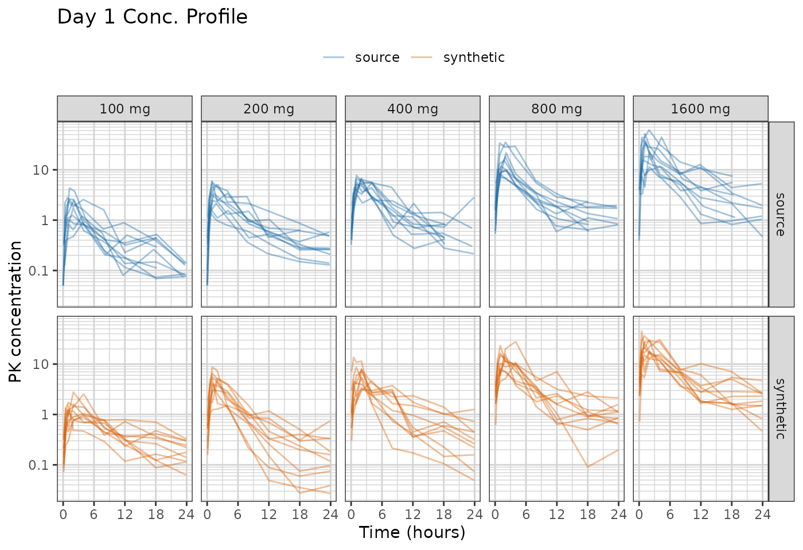
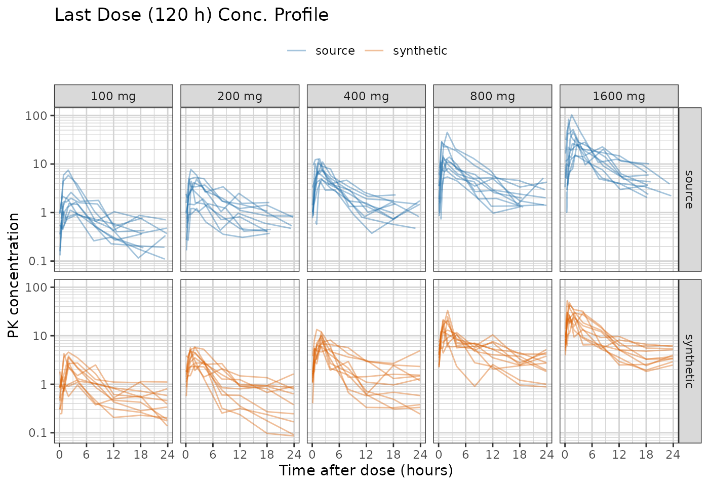
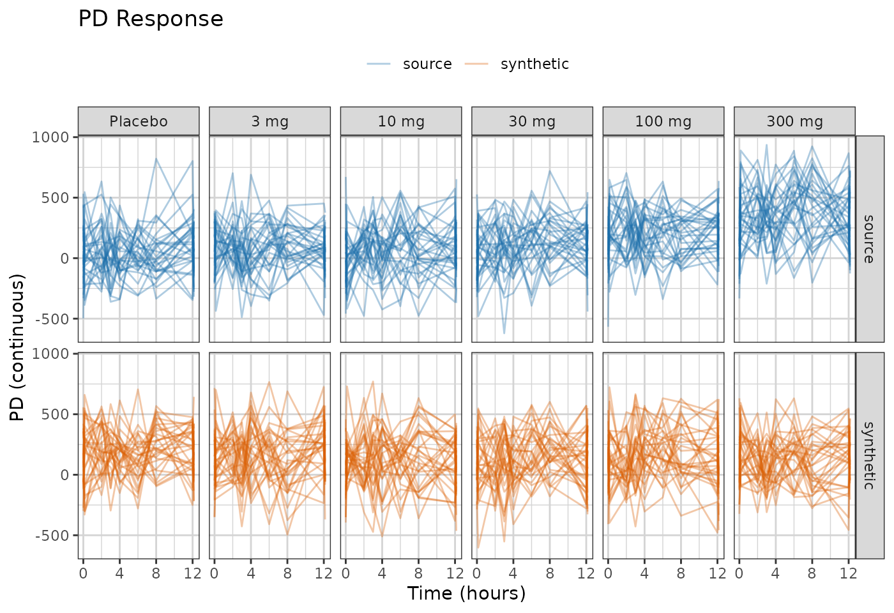
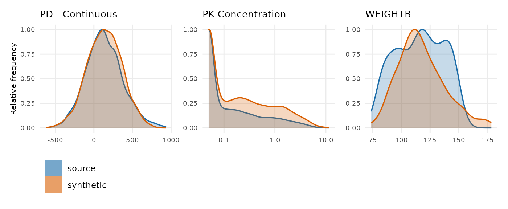

Fit a population model to a study, look at what the fit carries, and generate a synthetic dataset by simulating from it. No number a patient measured reaches the output: what leaves the source is a structural model, a handful of fixed effects, a covariance matrix, a residual error, and a dosing and visit model per arm.
It makes no formal privacy claim, and it is not for
estimation — the fitted parameters exist to make simulated
profiles look like the source study, and the object prints that warning
with itself. The full specification is in
vignette("pmxmodel-algorithm").
The dataset is xgxr::case1_pkpd: 180 patients, six arms
from placebo to 300 mg, with a pharmacokinetic (PK) concentration
endpoint and a continuous pharmacodynamic (PD) endpoint.
vignette("avatar-demo") and
vignette("pca-demo") run the other two generators over the
same study.
Configuration
To run this on your own study, edit the two chunks below that:
- Read in the dataset.
- Define the column roles.
The rest of the code can be kept as is.
library(dplyr)
raw <- as.data.frame(get(utils::data(list = "case1_pkpd", package = "xgxr"))) |>
mutate(CENS = ifelse(NAME == "PD - Continuous", 0, CENS))
SEED <- 808The column meanings. Columns not specified here are dropped from the synthetic dataset.
roles <- pmx_roles(
id = "ID",
time = "TIME",
dv = "LIDV",
cens = "CENS",
amt = "AMT",
evid = "EVID",
cmt = "CMT",
dvid = "NAME", # which endpoint each observation row is
nominal_time = "NOMTIME", # the grid the visit model is built on
strata = c("TRTACT", "DOSE"), # treatment arms, fitted one at a time
covariates = "WEIGHTB", # drawn, and available to the structural model
keep = "STUDY" # carried through verbatim
)Fitting
synpmx_model_estimate() is the only stage that reads
patient data, and the only one that needs nlmixr2. It works
out which endpoint is the drug, what design produced it, fits the
candidates that design admits and picks one on AIC.
fit <- synpmx_model_estimate(raw, roles, seed = 1)The chunk above is shown rather than run. Fitting compiles a model,
so this document reads a stored fit built by
scripts/build-model-fits.R and R CMD check
never needs a compiler.
That call takes about eleven minutes on this study, and says so
before it starts: every likelihood evaluation sums a contribution per
dose per subject, and twelve weeks of daily dosing for 150 patients is
12,750 dose records. Where a study’s doses are on an exact interval they
are compressed to one record per patient first, which the message also
reports; case1_pkpd records its dose times as actuals — 0,
24.22, 48.28 — so there is no exact interval to compress to, and the
wait is the honest cost of the design.
fit
#> A fitted PMX model, from synpmx_model_estimate()
#>
#> fitted on 180 patients, 6 arm(s)
#> structural 1cmt_oral (chosen from 1 candidate(s) on AIC)
#> fixed cl 8.168, v 111, ka 6.471
#> random on cl, v, ka
#> pk endpoint PK Concentration
#>
#> These parameters are not estimates to report. They exist to make
#> simulated profiles resemble the source study; the candidate set is too
#> small and the covariate model too thin for any of them to answer a
#> scientific question.A clearance of 8.17 L/h and a volume of 111 L. Whether those are the right numbers for this compound is not the question the generator asks: they exist to put the simulated profiles where the source’s are, and the object prints that warning with itself.
What the fit carries
Two halves. model_report() separates them, because they
answer to different things — one half is an estimate with all an
estimate’s caveats, the other is a summary of the study’s apparatus.
model_report(fit)
#> What this fitted model carries
#>
#> Estimated by nlmixr2
#> structural model 1cmt_oral
#> fixed effects cl 8.168, v 111, ka 6.471
#> between-subject cl 0.509, v 0.436, ka 0.707 (as SD on the log scale)
#> residual error proportional 0.394
#> covariate effects cl ~ (WEIGHTB/117.1)^0.75, v ~ (WEIGHTB/117.1)^1.00
#> pd shapes PD - Continuous: exponential
#> below the limit PK Concentration 1669 of 3600 (46%) imputed below 0.05
#>
#> Summarized from the source, not estimated
#> cohort 180 patients in 6 arm(s)
#> visit model 33 grid cells over 2 endpoint(s)
#> dosing model 85 planned cycle(s) per arm | no reductions, skips or early stops
#>
#> How the concentration endpoint was decided
#> endpoint PK Concentration (inferred)
#> endpoint compartment post_dose shape proportional
#> PD - Continuous FALSE FALSE NA FALSE
#> PK Concentration TRUE TRUE TRUE TRUE
#> design the median profile rises to a peak at 1 before declining, and 99% of subjects do too
#> also available the sampling would support a two-compartment model (median 9 distinct times after a dose, 6 after the peak): ask for it with `pk = "2cmt_oral"`Three lines in the estimated half are worth reading before anything else. The residual error is proportional, which follows from every observed concentration here being positive; a study recording zeros gets an additive error instead, because a proportional one has nothing to scale there. The PD endpoint gets an exponential shape from the least-squares search, with no exposure term. And 46% of the concentrations sit below the assay limit and were imputed inside the censoring region before fitting — a study this censored asks the fit to describe mostly-censored arms, and the arm-by-arm comparison further down is where that shows.
The signals table says how the concentration endpoint was decided:
PK Concentration is post-dose, dose-proportional and
rise-and-fall, and the PD endpoint is none of the three.
The correlation block is the other thing to read. A covariate that
moves with a random effect and is not in the model above is generated
independently of the profiles, so the synthetic data carries no
relationship between them. synpmx_avatar() keeps those
relationships without modelling them.
The candidates
show(model_candidates(fit), "Candidates the design admitted")One row, because the default fits one model and stops. A distribution
phase is a refinement of a shape the one-compartment model already has
and costs several times as long to fit, so it is available rather than
routine: pk = "2cmt_oral" forces it,
pk = c("1cmt_oral", "2cmt_oral") fits both and picks on
AIC, and model_report() says when the sampling would
support one.
Generating
synpmx_model_generate() reads no patient data. Its
arguments are the fit and a subject count, so everything about the
source that reaches the output has already passed through the fit.
synthetic <- synpmx_model_generate(fit, seed = SEED)The generated table is in the source’s shape: same columns, same classes, same compartment numbers, new identifiers.
show(head(synthetic, 10), "The first ten rows")Plot synthetic data and original data
The same overlays the other two demos draw, so the three can be read against each other.
library(ggplot2)
library(xgxr)
xgx_theme_set()
comparison_colours <- c(source = "#1B6CA8", synthetic = "#D95F02")
both <- rbind(
cbind(raw[, names(synthetic)], DATA = "source"),
cbind(synthetic, DATA = "synthetic")
)
obs <- both[both$EVID == 0 & !is.na(both$LIDV), ]
obs$TRTACT <- factor(obs$TRTACT,
levels = c("Placebo", "3 mg", "10 mg", "30 mg",
"100 mg", "300 mg"))
ggplot(obs[obs$NAME == "PK Concentration" & obs$TIME <= 24, ],
aes(TIME, LIDV, group = ID, colour = DATA)) +
geom_line(alpha = 0.4) +
facet_grid(DATA~TRTACT) +
xgx_scale_y_log10() +
xgx_scale_x_time_units("hours", breaks = seq(0, 24, by = 6)) +
scale_colour_manual(values = comparison_colours) +
labs(x = "Time (hours)", y = "PK concentration", colour = NULL) +
theme(legend.position = "top") +
ggtitle("Day 1 Conc. Profile")
last_dose <- obs[obs$NAME == "PK Concentration" &
obs$TIME >= 2016 & obs$TIME <= 2040, ]
last_dose$TAD <- last_dose$TIME - 2016
ggplot(last_dose, aes(TAD, LIDV, group = ID, colour = DATA)) +
geom_line(alpha = 0.4) +
facet_grid(DATA~TRTACT) +
xgx_scale_y_log10() +
xgx_scale_x_time_units("hours", breaks = seq(0, 24, by = 6)) +
scale_colour_manual(values = comparison_colours) +
labs(x = "Time after dose (hours)", y = "PK concentration", colour = NULL) +
theme(legend.position = "top") +
ggtitle("Last Dose (2016 h) Conc. Profile")
The synthetic profiles are smoother than the source’s, and that is the generator’s shape rather than a fault in the run: every one of them is the same one-compartment curve evaluated at a different draw of clearance, volume and absorption, with residual error on top. A real cohort’s profiles wander in ways one structural model does not reproduce.
Almost half the source concentrations are below the assay limit, so the honest comparison in the low arms is how much of each arm is censored rather than where its curve sits.
censored <- function(data, label) {
rows <- data$EVID == 0 & data$NAME == "PK Concentration" & !is.na(data$LIDV)
out <- aggregate(list(pct_blq = data$CENS[rows] == 1),
list(arm = data$TRTACT[rows]),
function(x) round(100 * mean(x)))
stats::setNames(out, c("arm", paste0("pct_blq_", label)))
}
blq_table <- merge(censored(raw, "source"), censored(synthetic, "synthetic"),
by = "arm")
show(blq_table, "Share of concentrations below the assay limit, by arm")The censored share moves in the right direction across the arms and does not match the source arm for arm: the generator censors more of the 3 mg arm than the study did and less of the 30 and 100 mg arms. One clearance and one volume distribution, shared by every arm and evaluated at the arm’s dose, cannot reproduce six arm-specific censoring fractions — the study’s low arms are not simply its high arms divided down. Where the analysis to be developed turns on how much data is below the limit, read this table before trusting the output.
ggplot(obs[obs$NAME == "PD - Continuous", ],
aes(TIME, LIDV, group = ID, colour = DATA)) +
geom_line(alpha = 0.35) +
xgx_scale_x_time_units(units_dataset = "hours", units_plot = "weeks") +
facet_grid(DATA~TRTACT) +
scale_colour_manual(values = comparison_colours) +
labs(x = "Time (hours)", y = "PD (continuous)", colour = NULL) +
theme(legend.position = "top") +
ggtitle("PD Response")
The PD endpoint is an exponential in time per subject, which is the whole of what the shape search offers: a constant, a line, or an exponential, with variability on the baseline and no exposure term. Its spread across the study lands close to the source’s — the median moves from 123 to 136 and the range is about as wide — because the shape was fitted to the study rather than asserted.
What is missing is the dose ordering. One shape is fitted to the pooled observations and each subject gets a draw on its baseline, so the arm a subject was assigned to does not reach its response.
late_pd <- function(data, label) {
rows <- data$NAME == "PD - Continuous" & data$EVID == 0 &
data$TIME > 1500 & !is.na(data$LIDV)
out <- aggregate(list(mean_pd = data$LIDV[rows]),
list(arm = data$TRTACT[rows]), function(x) round(mean(x)))
stats::setNames(out, c("arm", paste0("mean_pd_", label)))
}
pd_table <- merge(late_pd(raw, "source"), late_pd(synthetic, "synthetic"),
by = "arm")
show(pd_table, "Mean PD response after 1500 h, by arm")The source’s arms are ordered by dose. The synthetic ones are not:
its placebo arm can sit above its 300 mg arm. That is the documented
boundary of this generator rather than a bad seed — the PD shape carries
no exposure term, so a dataset whose point is exposure-response is not
served by it. synpmx_avatar() keeps that relationship
without modelling it, and vignette("avatar-demo") runs it
on this study.
Distributions of Synthetic and Original Data
One panel per endpoint and per baseline covariate, source against
synthetic. compare_pmx_distributions_height() sizes the
figure, since it grows a row of panels at a time;
output = "tables" gives the numbers behind it.
compare_pmx_distributions(raw, synthetic, roles)
Scoring it
synpmx_scorecard() does not know what produced the
dataset it scores, so it reads this output the same way it reads an
AVATAR or PCA one.
card <- synpmx_scorecard(raw, synthetic, roles)
synpmx_scorecard_datatable(card)Three rows read not applicable. B1a,
B1b and C2 read a run record that synpmx_avatar() writes on
its output and this generator does not, so there is nothing for them to
measure. That is a gap in those three checks rather than a property of
this dataset.
Two rows ask to be read. A5a reports observations
per patient falling from 30.7 to 29, which is the visit model drawing
attendance rather than copying it. D1 reports the standard deviation of
PK Concentration at 1.3 times the source’s, the furthest of
the three numeric variables — a spread that widened, consistent with the
censored arms above.
vignette("avatar-scorecard") documents what each row
asks and what its pass criterion is.
One call
synpmx_model() is the two stages together, for when you
do not need to look at the fit first. It is on the result either way, as
an attribute.
synthetic <- synpmx_model(raw, roles, seed = SEED)
attr(synthetic, "pmx_fitted_model")See also
-
vignette("pmxmodel-algorithm")— what each step does and why. -
vignette("pmxmodel-fingerprint")— every quantity the fit carries out of the study, in detail. - Evaluating the model generator on public data — the same generator over the public studies the other two surveys use.
-
vignette("pca-demo")— the same study through the principal-component generator. -
vignette("avatar-demo")— and through blending. -
vignette("avatar-scorecard")— the checks above, in detail.